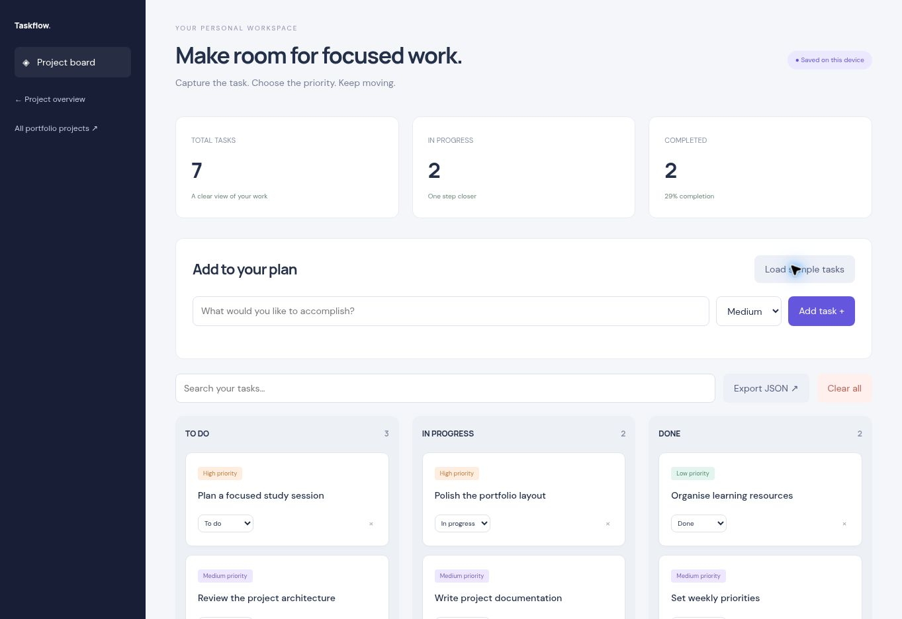

Capture
Add a task title and choose a priority without leaving the board.
PRODUCTIVITY / WEB APPLICATION
A personal Kanban workspace for turning a list of tasks into visible progress. Capture priorities, move work between stages, and keep the next action clear.

Actual application interface, shown with illustrative sample content.
THE IDEA
Tasks often end up scattered across notes. Taskflow brings them into one board with three simple stages: to do, in progress, and done.
This application runs directly in the browser with no account required. Its scope is deliberately focused on an everyday workflow visitors can try immediately.
HOW IT WORKS
Add a task title and choose a priority without leaving the board.
Move tasks between stages with an accessible status selector. Search by title to narrow the board.
See total tasks, work in progress, completed tasks, and a calculated completion percentage.
Changes persist in this browser. Export a JSON snapshot to keep a separate copy.
IMPLEMENTATION
Semantic HTML provides the structure, responsive CSS adapts the layout, and JavaScript handles the application state and interactions. Exports are generated locally in the browser.
Tasks and expenses stay in local storage on the current browser and device. Clearing browser data removes them; exports provide a portable copy. There is no account sync or shared workspace.
A PRACTICAL WALKTHROUGH
Try a small workflow before adding a larger task list.
Add “Read the API guide”, choose a priority, and create a second task for “Build a small example”. The board turns a broad intention into individual actions.
Move the first task into In progress, then Done. The summary reflects your board, making the relationship between active work and completed tasks easy to inspect.
Search for a task when the list grows. Export a JSON snapshot before clearing browser data or moving to a different device; the board itself does not sync between browsers.
TRY IT YOURSELF